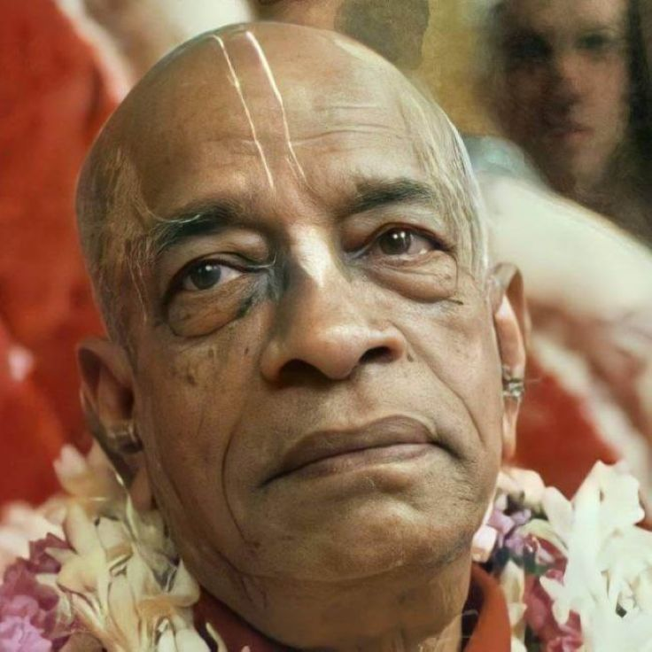

"I am always thinking of you. I can never forget.",p
Posted on : 16th December, 2024

Abhiram : We used to get some nice letters of "get well" and "good wishes" for Srila Prabhupada, and we would read them to him. Once at the Manor, Prabhupada was lying in bed, and I was standing near him, reading a card from our Godbrother Siddhasvarupa. Siddhasvarupa had been a bit of an iconoclast in ISKCON. He stayed apart from most of his Godbrothers, and he had his own unique style and perspective. By this time Siddhasvarupa had gone back to his own establishment in Hawaii, although he was still a devotee of Prabhupada. His card said, "Dear Srila Prabhupada, I am praying for your health" and so forth, and on one line he wrote, "I am a resident of Hawaii, and I hope that if you sometimes think of Hawaii you may also think of me."
At that point, Prabhupada suddenly choked up and burst into tears. I looked up from the card to Prabhupada's face, and tears were halfway down his cheeks. He said, "I am always thinking of you. I can never forget." This is indicative of the way he was at that time. Any nice thought brought tears of deep appreciation
~ Memories Anecdotes of Modern day saint -Volume 2 by Siddhant das.